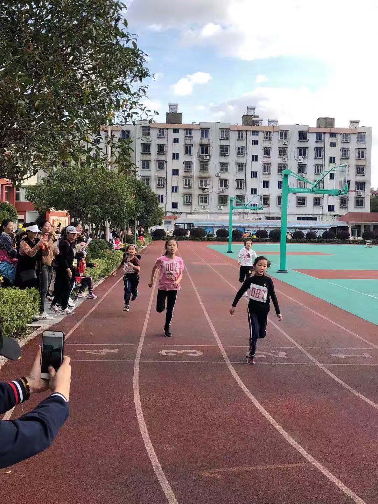
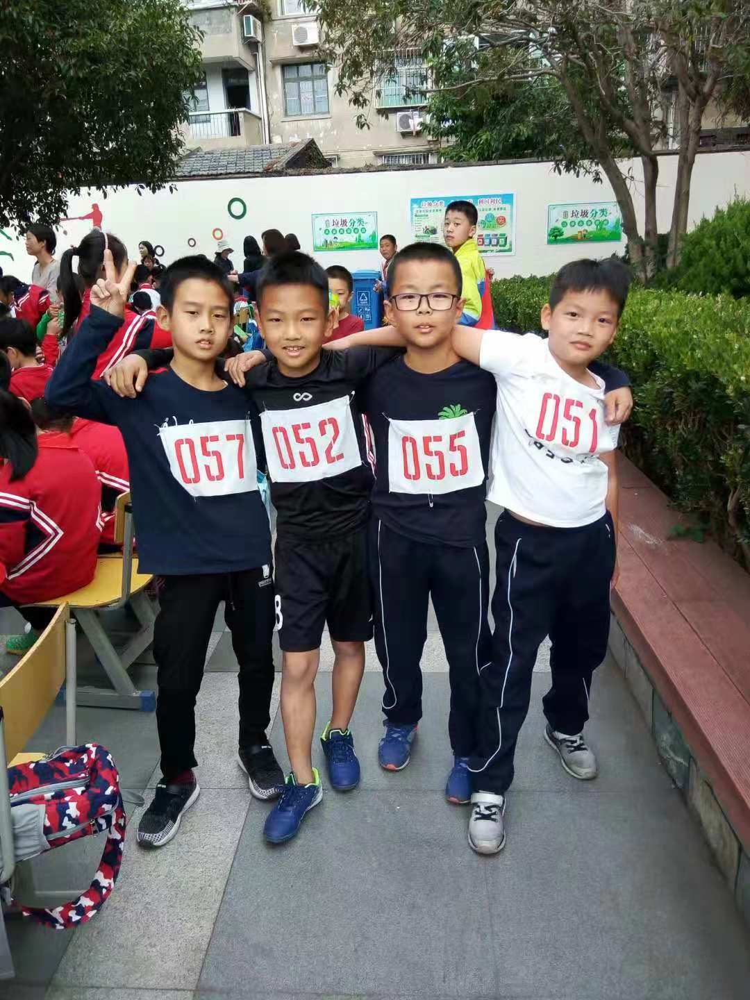

第二十一届运动会
【运动会第二天】 这张成绩单上写满了汗水、激情、拼搏和成就。 三(3)班以含金量最高的4X100男、女双料冠军收官。 总分168分，领跑年级段。 这里有班集体辉煌的荣誉， 这里有周老师挥舞着手娟满场飞奔的身影， 这里有热心义工妈妈的付出， 这里有个人英雄主义的光芒四射， 这里有你挥臂助威的呐喊声， 这里当然更有别的班遥不可及的羡慕眼神， ………… 郑智豪囊括男子200米、男子400米、男子4X100接力三枚金牌，荣登三冠王。 女子以刘思淼领衔的四人组勇夺女子4X100桂冠， 男子200米夺冠，男子400米夺冠，女子200米夺冠，男子垒球夺冠，男子跳远夺冠…… 捷报频传，运动健儿们越战越勇，掌声应你们雷动。 周老师一个喜不自禁，隆恩大赦： 2018年11月第一个周末，无作业。 同学们，让我们记住这一时刻， 三️是团结一心的， 三️是战无不胜的， 三️是低调而张扬的， 三️是奢华而富内涵的。
 